Fork and build (Windows)
Requirements
-
Register with GitHub and obtained a profile. This allows the setting up of repositories where your code can be published.
Process
Obtain a copy of DR_pi
Register with GitHub and login to your profile.
Navigate to https://github.com/Rasbats/DR_pi
Press the 'Fork' button
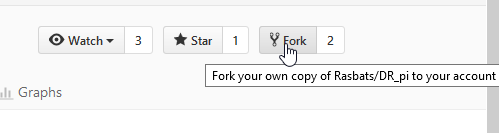
Go back to your own profile and you will find a find a copy of DR_pi
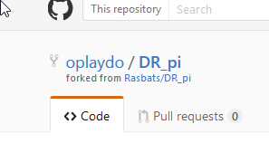
Make a folder for your projects. Here it is 'C:\learning'
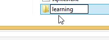
Go back to your repository and select 'Clone or download'. Using 'Copy' to add the link to your clipboard. 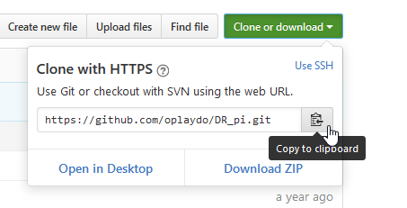
Open a command prompt, cd to 'C:\learning'. Type 'git clone ' and then right-click paste.
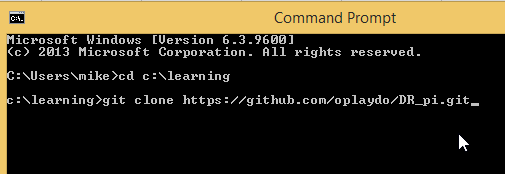
Run this.
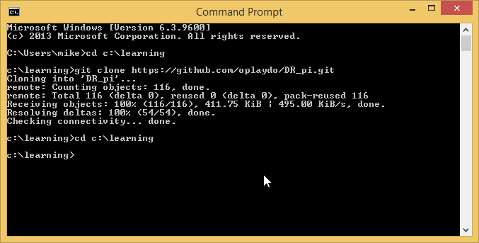
You will find a new folder has been made under learning called 'DR_pi'.
Using CMake
Because I have two versions of wxWidgets on my machine I prefer to use CMake-gui.
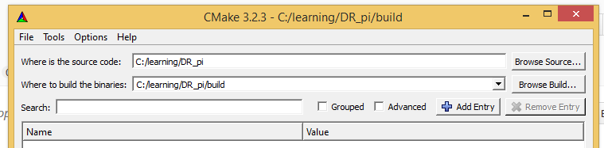
The source code folder is entered and where the build will be made. If this does not exist it will be created for you.
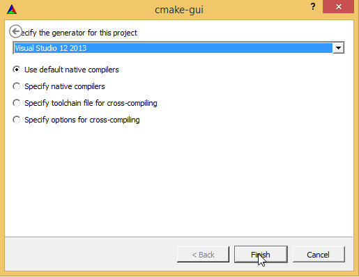
And press the 'Configure' button.
On this next screen a few changes need to be made.
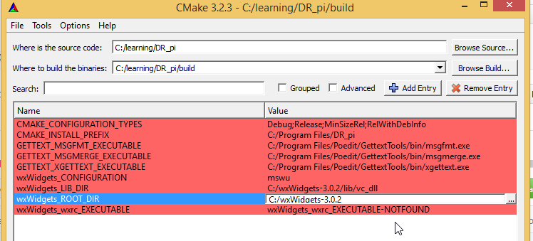
The 'msw' has been changed to 'mswu' to use unicode. The 'vc_dll' folder of wxWidgets is pointing to the correct version of wxWidgets, and the main wxWidgets folder is correct. We need to be using wxWidgets 3.0.2.
Now press 'Generate' to make the VS2013 solution in the 'build' folder.
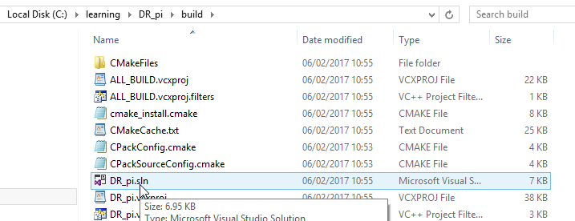
Using Visual Studio 2013
To allow standalone compilation you need to download 'opencpn.lib' from here (unzip and extract the file). Place it in the same 'build' folder shown above.
Your build folder will look like this:
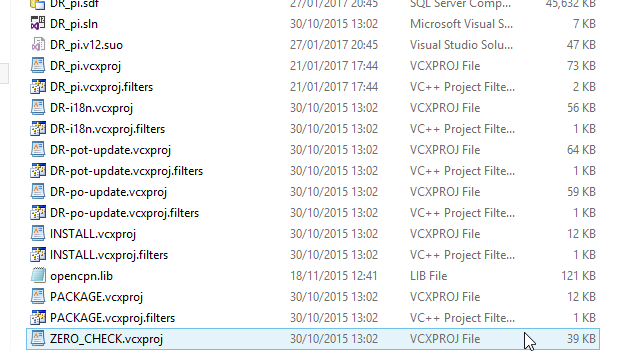
Open the solution file (.sln) with Visual Studio 2013.
First step is to link the opencpn.lib library you have just downloaded. Right-click on 'DR_pi' in 'Solution Explorer'. This opens a 'Property' page.
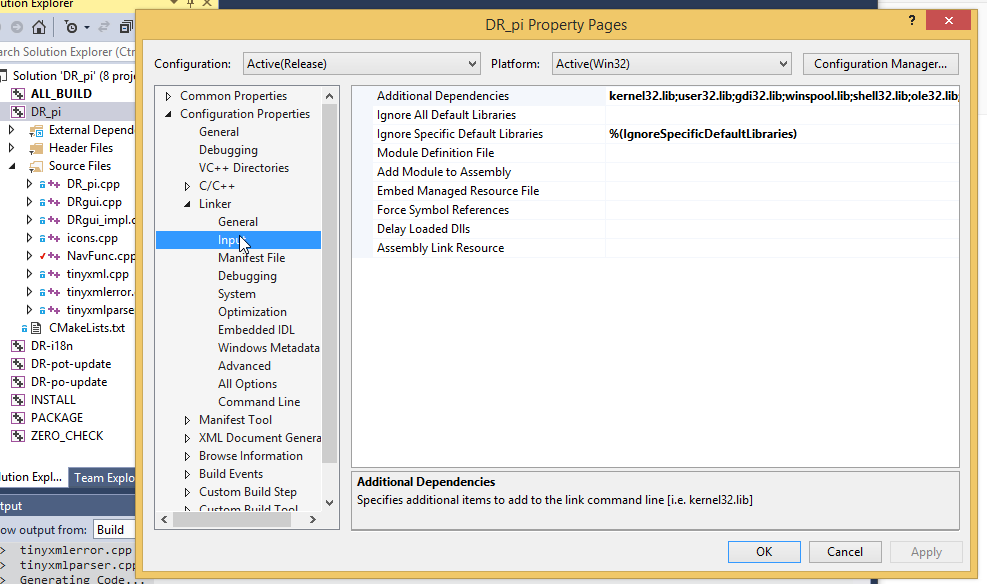
Select 'Linker', 'Input'. On the right you see 'Additional Dependencies'. This line can be edited by using a drop-down. Make a new line and add 'opencpn.lib' to the top of the list. Then 'OK' and 'Apply' what you have changed.
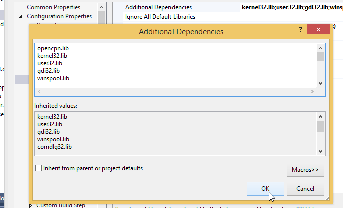
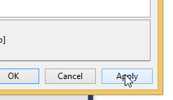
Now back in the main screen choose 'Release' from the drop-down on the toolbar.
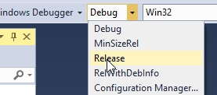
And the final step is to press 'Build'. Use 'Build Solution' or 'F7' for building and compiling the plugin.
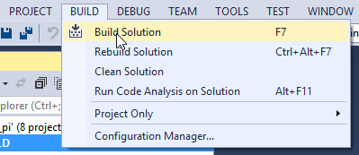
The plugin is built in 'learning\DR_pi\build\Release' folder. It is called "DR_pi.dll".
If you get an error saying 'Fabs' could not be found, try replacing 'Fabs' with 'abs'.
Installing the plugin
Copy 'DR_pi.dll' from the 'Release' folder to the plugins folder of the main OpenCPN program.
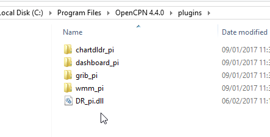
When you enable the DR plugin you should see the plugin icon on the toolbar.
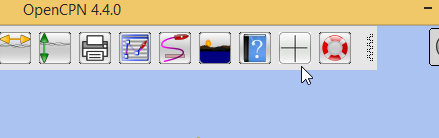
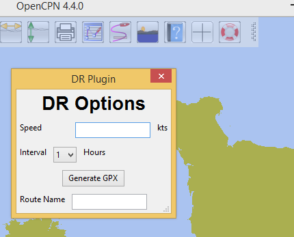
Notes
The copy of 'opencpn.lib' downloaded to use with this guide was made with OpenCPN 4.2.0 source code. The plugin will still run in O 4.4.0 because plugins need to be upwardly compatible.
When functions from new versions of the API are needed you will need to source a new version of 'opencpn.lib'.
The next guide will show the DR_pi plugin being renamed and modified.
'oplaydo1_pi' will allow the user to input start and finish positions. From these positions a GPX file will be created that can be imported and viewed in OpenCPN.